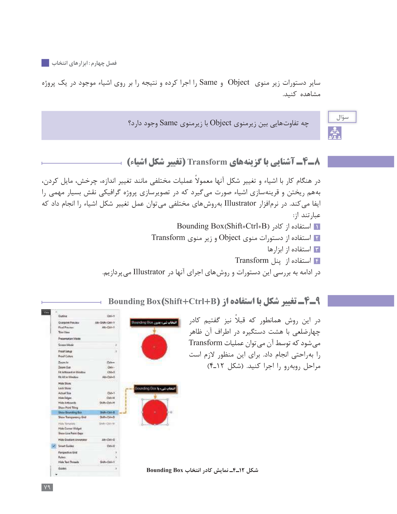
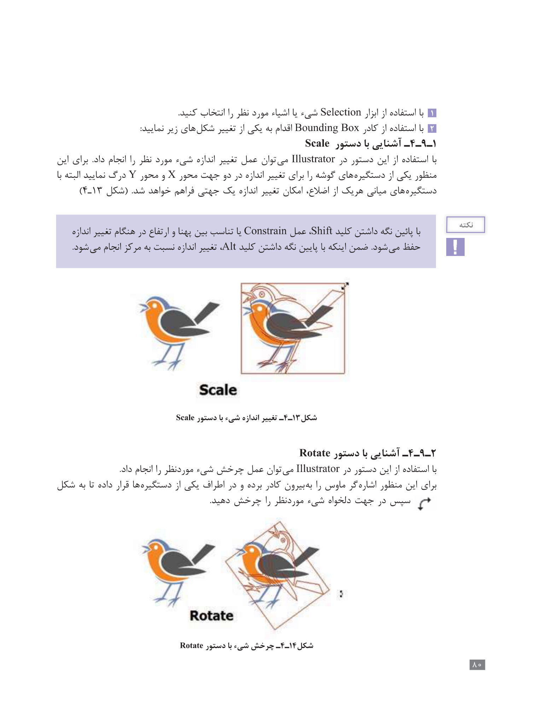
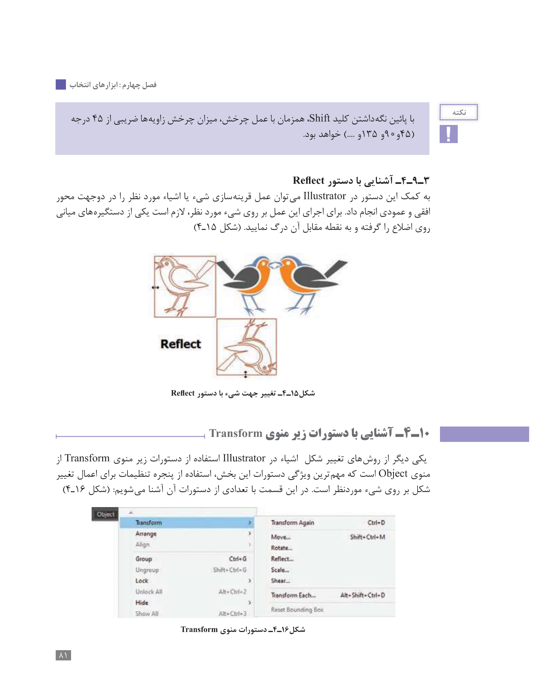
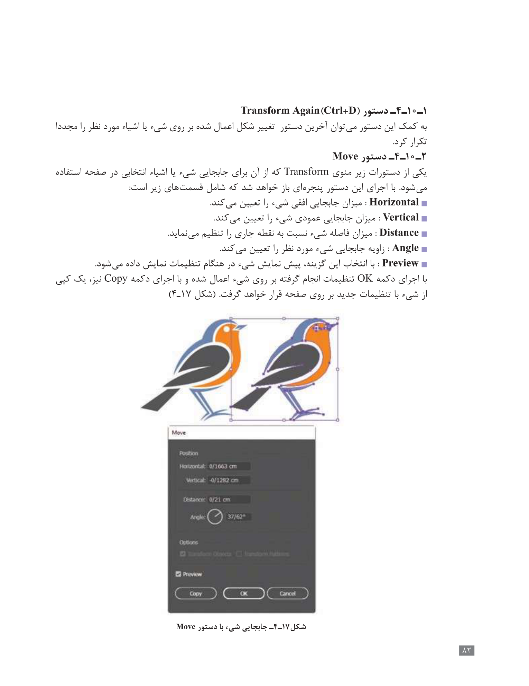
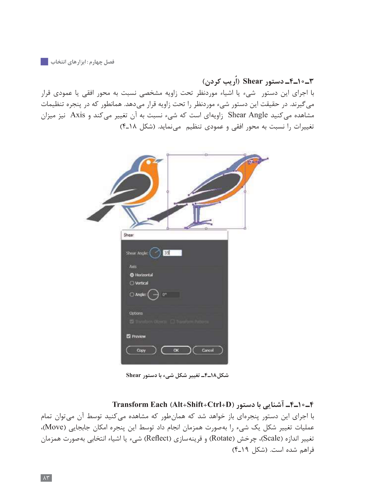

آشنایی با گزینههای Transform (تغییر شکل اشیاء)
در هنگام کار با اشیاء و تغییر شکل آنها معمولاً عملیات مختلفی مانند تغییر اندازه، چرخش، مایل کردن، به هم ریختن و قرینهسازی اشیاء انجام میگیرد. در Illustrator میتوان این کار را به روشهای مختلف انجام داد.
۱. Bounding Box
برای تغییر شکل با Bounding Box، ابتدا شیء را با ابزار Selection انتخاب کنید و سپس کادر Bounding Box را فعال کنید.
میانبر نمایش/مخفیکردن Bounding Box: Shift + Ctrl + B
۲. Scale
با این دستور در Illustrator میتوان اندازه شیء موردنظر را تغییر داد.
با نگه داشتن Shift، نسبت بین پهنا و ارتفاع هنگام تغییر اندازه حفظ میشود. با نگه داشتن Alt، تغییر اندازه نسبت به مرکز انجام میشود.
۳. Rotate
با این دستور میتوان شیء موردنظر را چرخاند. با نگه داشتن Shift همزمان با عمل چرخش، میزان چرخش ضریبی از ۴۵ درجه خواهد بود.
۴. Reflect
برای قرینهسازی شیء یا اشیاء موردنظر در دو جهت محور افقی و عمودی استفاده میشود. برای اجرای آن روی شیء، یکی از دستگیرههای میانی اضلاع را گرفته و به نقطه مقابل آن درگ میکنیم.
۵. دستورات زیرمنوی Transform
مسیر دستورات: Object → Transform
آخرین دستور تغییر شکل اعمالشده روی شیء یا اشیاء موردنظر را مجدداً تکرار میکند.
برای جابهجایی شیء یا اشیای انتخابی. شامل Horizontal، Vertical، Distance، Angle و Preview است.
برای چرخش شیء.
برای قرینهسازی.
برای تغییر اندازه.
برای تغییر شکل شیء به صورت اریب. Shear Angle و Axis قابل تنظیم است.
امکان انجام همزمان تغییر اندازه، چرخش، جابهجایی و قرینهسازی روی یک شیء را فراهم میکند.
🎨 تمرین تعاملی
روی دکمهها بزن و اثر Transform را روی شکل ببین.
شکل اولیه
📝 آزمون
📖 صفحات اصلی کتاب
تصاویر صفحات ۷۹ تا ۸۳ برای مرور در نرمافزار قرار داده شدهاند.




